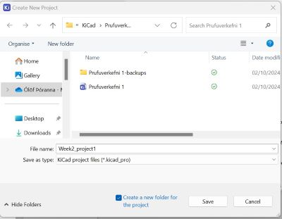
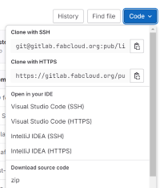
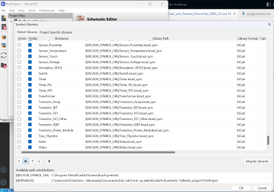
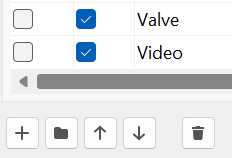
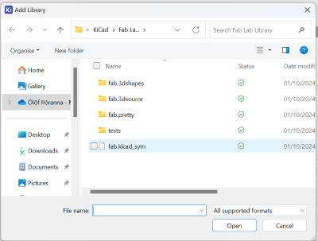
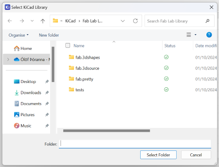
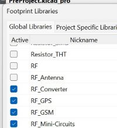

KiCad and Roland MonoFab SRM 20
KiCad and Roland MonoFab SRM-20
Andri Sæmundsson made videos for Fab Lab Reykjavík where he explains how to set up KiCad 8.
On KiCad.org I downloaded the KiCad program and then installed it on the computer. On the About KiCad site it says that KiCad is an open source software that can be used to design EDA or Electronic Design Automation. In KiCad Schematic Editor is used to draw electronic circuit and you have access to thousands of symbols that can be found in libraries. The PCB Editor is then used to add elements (???) to the circuit. Then you can use the 3D viewer to preview your design.
I opened the program, clicked on File and new to create a new project. I saved it in a folder in my computer. Then I could see that under my new program I could see both the Schematic file and the PCB file. I began by editing the Schematic file.

In this video he explains how to hide librarys that are seldom used and add a KiCad library. After watching the video I googled "Fab Lab library", as suggested in the video, and downloaded this library. Then I clicked on the button marked as Code and chose Zip. Then I opened up the downloads folder and extracted the library. I saved this library in a folder where I plan on storing everything connected to working with KiCad.

The next step was to open KiCad, click on Preferences" and Manage Libraries**. This photo shows that there are many libraries and it can be hard to find the right library, so as Andri Sæmundsson mentioned in the video, it would be easier to work with a few libraries, but first I had to install the Fab Lab library before removing other libraries.

I clicked on the small button with a folder sign on it, opened up the folder with the library and double clicked on the sym file.


Then I clicked on Preferences and chose Footprint Libraries. I clicked on the Folder button and this time I added the Fab.Pretty folder.

After adding the Fab Lab library to the lists of libraries I took the clicks away from the box under Active in front of every other library. After that the only active library is the Fab Lab library.

In these three videos; first part, second part, third part he explains how to use Scematic editor.
In Schematic Editor I opened the Fab Lab library by clicking on this symbol.
I wrote ATtiny 412, chose it from the list and clicked ok. I could drag it around and I placed it on the screen by leftclicking on the screen. To add a switch I opened the library again and wrote "Switch
SMT means that the button should be surface mounted.
The next step was to add a button, so I opened the library again and wrote button. From the list I chose Switch_Tactile_Omron.
After that I added a capacitor with the number C_1206. The number tells the size of the capacitor....
Then I added a Led with the same number as the capacitor; L_1206.
The last element that I added was a Conn_PinHeader with three male pins in a row.
Because the icon for the library is chosen, each time I click on the screen the library opens. To be able to use the mouse I had to click on the arrow at the top of the list. Then I could use the mouse to move elements around.
To rotate an element you can write "R" and then the element rotates 90 degrees.
Elements can be labeled by clicking on the symbol marked with an underlined A or just writing the letter"L". I added a label marked GND to Ground and another one marked VCC to VCC. I labelled pin 6 as UPDI.. I labelled pin 7 as LED and also put a LED label on the resistor. Then I connected the other end of the resistor to the LED with wire.I labelled the other end of the LED with GND.
I labelled one end of the capacitor with GND and the other end with VCC. I labelled one end of the switch as GND and the other one as BNT.
The first pin on the PinHeader I labelled as VCC and the second one as GND. Pin nr. 3 was labelled as UPDI.
I connected the led to pin 7, which is marked as PA3. Then I connected the LED to Ground. Then I connected the swithc to pin 2, which is marked as PA6. In Schematic Editor it looks as if Pins nr. 2 and 7 are on the same side but when you look at this photo of ATtiny 412 from Spence Konde you can see that the pins are on each side.
{kind=link}
I connected the first pin on the Conn_PinHeader to Ground, the second one to VCC and the third one to UPDI.
I used the Electrical Rule Checker to see if everything was legal but got a few errors. After marking pins nr. 3, 4 and 5 with No connection flag and putting a power flag on Ground and *VCC, the Electrical Rule Checker everything seemed to be okay.
In Page settings I changed the page size to A5 and added some information about the project. Then I added a text box, just to try it. I also put a rectangular frame around some of the elements and changed the style of the frame.
This video explains how to use the PCB editor.
In this video he adds 3D model to his PCB and uses the 3D viewer.
Here he shows how to use Design Rule Checker and Inkscape.
In this video he explaines how to mill a board with Fab Modules.
Souldering on a board is explained here.
And finally he explaines how to program Attiny 412 video.